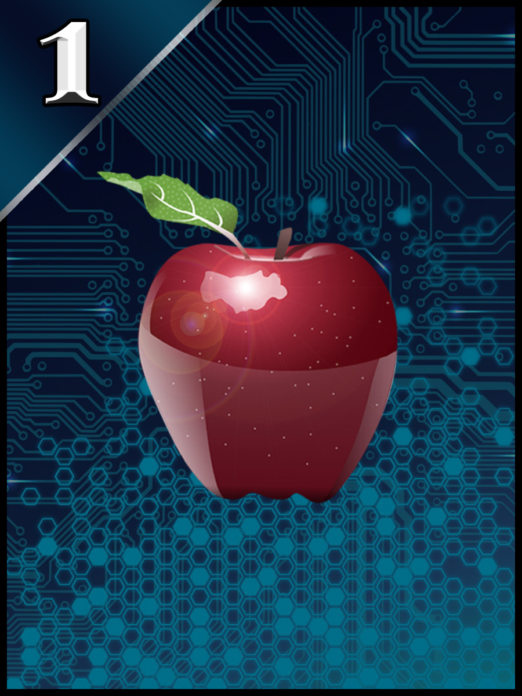
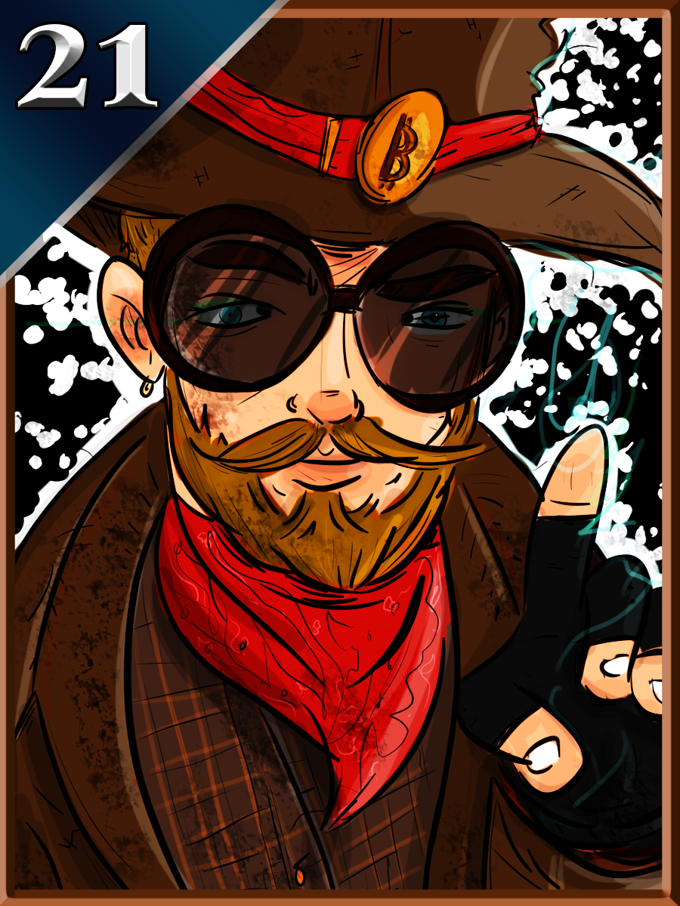
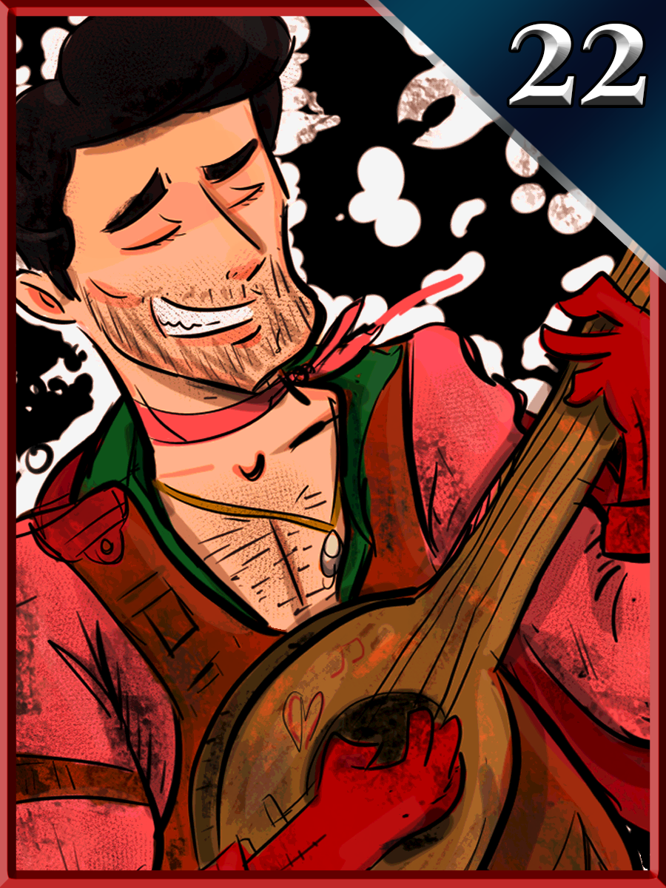
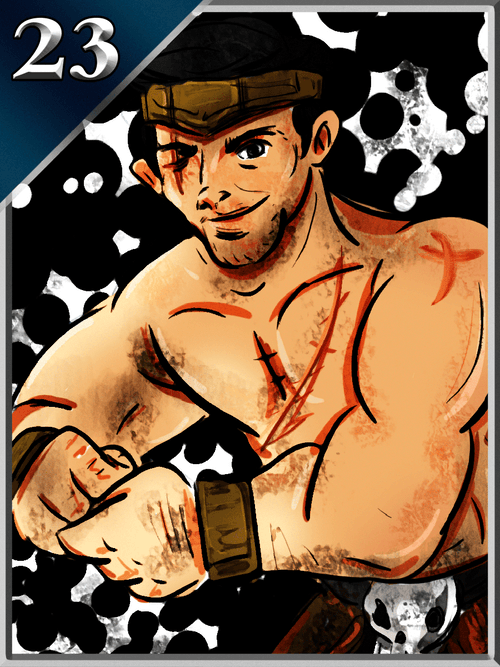

Welcome to Curio Wiki
Curio Wiki is a community-built encyclopedia documenting the history of Curio Cards, Mad Bitcoins, the World Crypto Network, and the people who shaped early cryptocurrency media and NFT history.
Featured Articles
- Curio Cards — The first art NFT collection on Ethereum, launched May 9, 2017. Sold at Christie's for $1.2 million.
- Thomas Hunt — Filmmaker, historian, and crypto media pioneer known as "Mad Bitcoins." Co-founder of Curio Cards and the World Crypto Network.
- World Crypto Network — Independent media collective broadcasting Bitcoin education since 2014. Over 1,300 videos archived.
- Rhett Creighton — Former child actor (Crocodile Dundee II), MIT-educated nuclear engineer, and the programmer who coded the Curio Cards smart contracts.
Statistics
This wiki contains articles on 20+ people, 7 artists, 19 shows, and 130+ WCN guests.
Curio Cards
| Curio Cards | |
 Card #1 "Apples" by Phneep — the first art NFT minted on Ethereum | |
| Type | NFT art collection |
|---|---|
| Blockchain | Ethereum |
| Launched | May 9, 2017 |
| Founders | Thomas Hunt, Travis Uhrig, Rhett Creighton |
| Artists | 7 |
| Cards | 30 (+1 misprint) |
| Total supply | 29,700 |
| Contract | Modified ERC-20 |
| Website | curio.cards |
Curio Cards are non-fungible tokens on the Ethereum blockchain. Created in 2017 as an online art gallery, the project is recognized as the first collection of NFT artworks on Ethereum.[1] Curio Cards were developed by Thomas Hunt, Travis Uhrig, and Rhett Creighton, and launched on May 9, 2017.[2] The collection features 30 unique digital images by seven different artists, with a total supply of 29,700 cards.
In October 2021, a complete set including the digital misprint "17b" was sold at Christie's Post-War to Present auction for $1,267,320 (393 ETH), purchased by Taylor Gerring, an early contributor to the Ethereum project.[3]
History
The concept for Curio Cards emerged from the San Francisco Bitcoin meetup scene in early 2017. Thomas Hunt, a Bitcoin content creator known as Mad Bitcoins, had long been a collector of baseball cards and Magic: The Gathering cards. In a 2017 interview with Bitcoin.com, Hunt explained: "I've always been a collector... I thought, why not combine my love for cryptocurrency with my love for collecting and make something fun."[4]
Hunt and software developer Travis Uhrig recognized that Rare Pepes, a meme-NFT project on Counterparty (built atop Bitcoin), had technical limitations and was associated with controversial imagery. They envisioned a platform for legitimate digital art on Ethereum. To build the smart contracts, they recruited Rhett Creighton, a former child actor and MIT-educated nuclear engineer whom they had met through the San Francisco Bitcoin meetup group.[5]
Creighton initially proposed creating a dedicated Ethereum fork for the cards, but Uhrig argued this would leave the project "orphaned" on its own chain. They remained on the public Ethereum blockchain, a decision that would prove crucial to the project's long-term significance.[6]
Technical innovations
Curio Cards introduced several technical innovations that later became foundational to the NFT ecosystem. Because no NFT standards (such as ERC-721 or ERC-1155) existed in May 2017, Creighton hand-coded the smart contracts using a modified ERC-20 token structure. Each card series functioned as its own fungible token contract with a finite supply, creating what the founders called "digital prints."[7]
Key innovations included: purchasing artwork directly from a smart contract (the "vending machine" model); embedding IPFS hashes into the contract for decentralized image storage; and using non-divisible tokens in finite supply. According to NFT historian Adam McBride, Curio Cards was the first project to use IPFS for NFT storage, and the links remained active four years later when the cards were rediscovered.[6]
Curio Cards is directly referenced in the ERC-721 EIP specification, the standard that would later define how NFTs work on Ethereum. The two most popular NFT standards (ERC-721 and ERC-1155) share many design elements with Curio Cards.[7]
The 17b misprint
During deployment, something went wrong while Creighton was creating the contract for Card #17, requiring him to reissue the card. The original became known as "17b," a digital misprint that was briefly available before the contract was disabled. A small number of 17b cards were acquired by early users, making it one of the rarest items in the collection.[6]
The wrapper
Because Curio Cards pre-dated modern NFT standards, they could not be listed on platforms like OpenSea. In March 2021, a "wrapper" was developed to make the old ERC-20 contracts compatible with the ERC-1155 standard. The first rushed third-party wrapper had a fatal bug: tokens sent to it became permanently stuck ("permawrapped"), making Card #26 the rarest tradeable card with only 105 remaining in circulation.[6]
Artists and cards
The original 30-card set featured work from seven artists, each bringing a distinct visual style:
- Phneep — Created Cards 1–9 and 17, including the iconic "Apples" (Card #1) and the "Art Story Set" (Cards 7–9) depicting the evolution of art from prehistoric forms to masterworks. Phneep collaborated extensively with Hunt on the conceptual framework.
- Cryptograffiti — A pioneer in Bitcoin-themed street art. Created Cards 10–13, bridging physical crypto art culture with digital collectibles.
- Cryptopop — Contributed stylized pop-art crypto imagery for Cards 14–16.
- Robek World — Created Cards 20–23. Card #20 ("The Wizard") depicts Thomas Hunt, Card #21 ("MadBitcoins") is Hunt's namesake card, Card #22 ("The Bard") represents Travis Uhrig, and Card #23 ("The Barbarian") depicts Rhett Creighton. Robek also created an early promotional commercial for his cards.
- Daniel Friedman — A researcher in entomology who contributed Cards 24–26, featuring hand-drawn physical artwork brought to the digital space. The supply was released as 333, 222, and 111 copies respectively, with Card #26 becoming the rarest in the set.
- Marisol Vengas — Contributed Cards 27–29, featuring early digital sketches and abstract forms.
- Thoros of Myr — The pseudonymous artist of Card #30 ("Eclipse"), the final card in the set.
Card gallery
#1 Apples
#10 Future

#17 UASF

#20 MadBitcoins

#21 The Wizard

#22 The Bard

#23 Barbarian
#30 Eclipse
Rediscovery and NFT boom
After the 2017 cryptocurrency crash, Curio Cards was largely forgotten. The founders tried to run it as a startup business, but as Uhrig later recalled, he "could barely give the virtual cards away on a Discord channel."[6] The smart contracts holding the cards sat dormant on the blockchain for nearly four years.
In March 2021, as the NFT market exploded, a group of "NFT archaeologists" — collectors searching for the oldest tokens on Ethereum — rediscovered Curio Cards. Critical to the verification process were timestamped video archives from the World Crypto Network, where Hunt had interviewed the founders during the 2017 launch week. These videos served as definitive proof that Curio Cards predated CryptoPunks (launched June 23, 2017) as an art NFT project.[2]
Adam McBride, one of the key archaeologists, described the experience: "The idea of having a failed business and then magically four years later it becomes successful is just impossible. And it actually happened to these guys."[2]
Christie's auction
On October 1, 2021, a complete collection of 31 Curio Cards (including the 17b misprint) was sold at Christie's Post-War to Present auction in New York for $1,267,320 (393 ETH). The buyer was Taylor Gerring, an early contributor to the Ethereum project.[3] The sale represented a milestone for both the project and the broader NFT art market, establishing Curio Cards as a "blue-chip" historical asset alongside CryptoPunks and Autoglyphs.
Arctic preservation
As part of the GitHub Arctic Code Vault program, the open-source code for the Curio Cards smart contracts was included in a snapshot taken on February 2, 2020. This data was written onto 186 reels of digital photosensitive silver halide film and deposited 250 meters deep into the permafrost of a decommissioned coal mine in Svalbard, Norway, within the Arctic World Archive. The foundational code for all 30 Curio Cards, including Card #21 (Mad Bitcoins), is now preserved alongside works from the Vatican Library, intended to survive for at least 1,000 years.[8]
References
- Curio Cards — Wikipedia
- Howcroft, E. (2021). "A 'historic' NFT collection is on sale at Christie's." Quartz.
- Christie's Post-War to Present Auction, October 2021.
- Thomas Hunt Interview — Bitcoin.com, 2017.
- "The Story Behind the First Art NFT" — Start With NFTs.
- Castor, A. (2022). "The early history of NFTs, part 3: Curio Cards." Amy Castor.
- Curio Cards Documentation — Official docs.
- GitHub Archive Program — Arctic Code Vault.
- Curio DAO on Medium — Founder profiles and history.
- Curio Cards — IQ.wiki.
- "Exploring the Rarest and Most Popular Curio Cards" — nft now.
Thomas Hunt (media personality)
| Thomas Hunt | |
Card #21 "MadBitcoins" from the Curio Cards collection, by Robek World (2017) | |
| Known as | Mad Bitcoins |
|---|---|
| Born | United States |
| Education | History degree |
| Occupation | Filmmaker, media personality, crypto commentator |
| Known for | World Crypto Network, Curio Cards |
| Website | madbitcoins.com |
| YouTube | Mad Bitcoins |
Thomas Hunt, known professionally by his pseudonym Mad Bitcoins, is an American filmmaker, digital media pioneer, and cryptocurrency commentator. He is the founder of the World Crypto Network (WCN), one of the oldest independent broadcasting collectives in the Bitcoin ecosystem, and a co-founder of Curio Cards, recognized as the first generative art NFT project on the Ethereum blockchain.[1] His work bridges experimental filmmaking, decentralized media infrastructure, and blockchain art history.
Early life and education
Hunt holds a degree in History, an academic background he has frequently cited as foundational to his interest in immutable records and digital archiving. Before entering the cryptocurrency space, he was active in digital film production and experimental media.[2]
Filmmaking: Star Trek Ships Only
Hunt gained internet recognition for his experimental project Star Trek Ships Only, a transformative media work that meticulously edited episodes and films of the Star Trek franchise to remove all human characters, dialogue, and plot, leaving only external shots of spacecraft accompanied by ambient engine noise. The project was covered by Boing Boing and cited as a precursor to the "ambient cinema" and ASMR trends. Hunt documented his filmography through Thomas Hunt Films.[3]
Cryptocurrency career
Mad Bitcoins (2012–present)
In 2012, Hunt adopted the "Mad Bitcoins" persona and launched a YouTube channel characterized by high-energy, vlog-style delivery designed to demystify Bitcoin for a non-technical audience. At a time when the early Bitcoin community was dominated by technical whitepapers and forum debates, Hunt used humor and cultural references to make decentralized currency accessible to the masses.[4]
World Crypto Network (2014–present)
To ensure the movement was not dependent on a single creator, Hunt founded the World Crypto Network (WCN) as a decentralized media collective. The network hosts programs including The Bitcoin Group, a roundtable debate show, and Today in Bitcoin, a daily news program. WCN is notable for its strict adherence to independent funding, relying on community support through Protip and later Tallycoin rather than corporate sponsorships.[5]
As of 2026, WCN has archived over 1,300 videos on YouTube documenting the history of Bitcoin from 2014 to the present, featuring interviews with notable figures including Jimmy Song, Peter Todd, Jameson Lopp, Samson Mow, and Jack Mallers.[6]
Value-for-Value pioneer
Hunt's background in history made him wary of central authorities and corporate censors. To protect independent media, he pioneered decentralized funding models:
- Protip (2014): An early open-source browser extension that allowed users to tip content creators automatically in Bitcoin based on time spent on their page. It was one of the first "Value-for-Value" experiments on the web.
- Tallycoin: As the Bitcoin ecosystem evolved, Hunt moved WCN's fundraising to Tallycoin, a crowdfunding platform utilizing the Lightning Network that accepts both on-chain and Lightning donations without third-party fees.
Role in NFT history
Card #20 "The Wizard"
On May 9, 2017, Hunt co-founded Curio Cards alongside Travis Uhrig and Rhett Creighton. Hunt's love of collecting — baseball cards, books, and Magic: The Gathering — directly inspired the project. He is immortalized in the collection on two consecutive cards by artist Robek World: Card #20 ("The Wizard") and Card #21 ("MadBitcoins"), both released May 29, 2017.[7]
In 2021, when the NFT market exploded, Hunt's timestamped WCN video archives from the 2017 launch period became critical "archaeological evidence" used by collectors and historians to verify that Curio Cards predated CryptoPunks as an art NFT. This verification directly led to the $1.2 million Christie's sale.[8]
Arctic preservation
In what Hunt has described as a "full-circle moment" for a man with a History degree, his contributions to digital art are now physically preserved in the Arctic World Archive in Svalbard, Norway. The Curio Cards smart contract code — including the logic governing Card #21 — was deposited 250 meters deep in permafrost as part of the GitHub Arctic Code Vault, designed to survive for at least 1,000 years.[9]
References
- Curio Cards — Wikipedia
- Bitcoin's Mad Progress with Thomas Hunt — IMDb
- Thomas Hunt Films — Official portfolio
- Mad Bitcoins — Medium
- The World Crypto Network Podcast — Podnews
- World Crypto Network — YouTube
- Breaking Down Curio Cards — Start With NFTs
- Curio Cards at Christie's — Quartz
- GitHub Archive Program
Rhett Creighton
| Rhett Creighton | |
Card #23 "The Barbarian" depicting Rhett Creighton, by Robek World (2017) | |
| Born | John Everett Creighton IV |
|---|---|
| Education | MIT — B.S. Physics, M.S. Nuclear Engineering |
| Occupation | Actor, engineer, blockchain developer |
| Known for | Crocodile Dundee II, Curio Cards |
| IMDb | nm0187311 |
Rhett Creighton (born John Everett Creighton IV) is an American actor, nuclear engineer, and blockchain developer. He is best known for his childhood acting roles in Crocodile Dundee II (1988), War and Remembrance (1988), and True Blood (1989), and for programming the smart contracts that powered Curio Cards, the first art NFT collection on Ethereum.[1]
Early life and acting career
Creighton began acting at age four, appearing in national television commercials, movies, and plays. His most prominent role was as "Park Boy" in Crocodile Dundee II alongside Paul Hogan. He also appeared in the miniseries War and Remembrance as Louis Henry.[1]
Education and engineering
After his acting career, Creighton left high school early to attend the Massachusetts Institute of Technology (MIT), where he earned a Bachelor of Science in Physics and a Master's Degree in Nuclear Engineering. During college, he won MIT's annual autonomous robot competition (6.270) and starred in an episode of TLC's Junkyard Wars, which his team also won, building sand yachts from scrap parts.[2]
Cryptocurrency and Curio Cards
Creighton became involved in Bitcoin through the San Francisco meetup scene, where he attended the first public presentation of the Lightning Network proposal. He contributed to Bitcoin Core's RPC test suite before meeting Thomas Hunt and Travis Uhrig.
In 2017, Creighton hand-coded the Curio Cards smart contracts in Solidity, deploying the first "vending machine" on May 9, 2017. Because no NFT standards existed, every detail had to be coded from scratch, and each card was manually deployed to the Ethereum blockchain. He is depicted on Card #23 ("The Barbarian") by artist Robek World.[3]
References
- Rhett Creighton — IMDb
- Curio Cards Founders — Rhett Creighton — Medium
- The early history of NFTs: Curio Cards — Amy Castor
Travis Uhrig
| Travis Uhrig | |
Card #22 "The Bard" depicting Travis Uhrig, by Robek World (2017) | |
| Occupation | Software developer, entrepreneur |
|---|---|
| Known for | Curio Cards |
Travis Uhrig is an American software developer and entrepreneur who co-founded Curio Cards alongside Thomas Hunt and Rhett Creighton. Uhrig served as the business development lead for the project, responsible for pitching the concept to venture capitalists and managing artist relationships.
Uhrig met Hunt and Creighton through the San Francisco Bitcoin meetup group. He recognized the potential of using Ethereum's smart contract capability to create a "Patreon model" for digital art patrons. His key contribution was persuading Creighton not to fork Ethereum for the project, arguing it would leave the trading cards "orphaned" on a separate chain.[1]
Uhrig is depicted on Card #22 ("The Bard") by artist Robek World, described as a "song-singing leader" — the only card in the set with its number printed on the right side.[2]
He appeared as a guest on the World Crypto Network. (WCN episodes featuring Travis Uhrig)
References
- Curio Cards at Christie's — Quartz
- Breaking Down Curio Cards — Start With NFTs
World Crypto Network
| World Crypto Network | |
World Crypto Network YouTube channel logo | |
| Type | Independent media collective |
|---|---|
| Founded | 2014 |
| Founder | Thomas Hunt |
| Focus | Bitcoin news, education |
| Videos | 1,300+ |
| Website | worldcryptonetwork.com |
| YouTube | WorldCryptoNetwork |
| Podcast | Apple Podcasts |
The World Crypto Network (WCN) is a veteran independent media organization and podcast network dedicated to Bitcoin and cryptocurrency education. Founded by Thomas Hunt (Mad Bitcoins) in 2014, WCN has archived over 1,300 videos documenting the evolution of the cryptocurrency ecosystem. The Financial Times described it as "a YouTube channel that covers cryptocurrencies such as Bitcoin" (November 28, 2014).
Programming
WCN operates as a hub-and-spoke model with Thomas Hunt as the central node. Key programs include:
- The Bitcoin Group — A roundtable debate show featuring Hunt and rotating panelists including Adam Meister, Tone Vays, and Jimmy Song. (All episodes)
- Today in Bitcoin — A daily news show hosted by rotating members. (All episodes)
- Adventures in NFTs — A show covering the NFT ecosystem. (All episodes)
- Bitcoin Headlines — Quick news roundups. (All episodes)
- BTCIOT — Bitcoin and Internet of Things coverage. (All episodes)
- Lightning Hacksprint — Technical deep dives. (All episodes)
Notable guests
WCN has hosted over 130 guests across its history. (Complete guest list) Notable guests include:
- Jimmy Song — Bitcoin developer and educator (episodes)
- Peter Todd — Bitcoin Core developer (episodes)
- Jameson Lopp — Co-founder of Casa (episodes)
- Samson Mow — CEO of JAN3 (episodes)
- Jack Mallers — CEO of Strike (episodes)
- Tone Vays — Trader and analyst (episodes)
- Adam Meister — "The Bitcoin Voice" (episodes)
- Ben Arc — LNBits developer (episodes)
- Vortex — The Bitcoin News host (episodes)
- Chris DeRose — Bitcoin advocate (episodes)
- Nick Szabo — Cryptographer, smart contract pioneer (episodes)
- Roger Ver — Early Bitcoin investor (episodes)
- Tatiana Moroz — Bitcoin musician (episodes)
- Stephanie Murphy — Let's Talk Bitcoin host (episodes)
- Eric Lombrozo — Developer (episodes)
Funding
WCN operates on a "Value-for-Value" model. It was initially funded through Protip, an automated Bitcoin tipping extension. The network later transitioned to Tallycoin for Lightning Network-native crowdfunding, and maintains a Patreon page as supplemental support.
References
- World Crypto Network — YouTube
- WCN Podcast — Podnews
- WCN Hosts & Guests — Complete list
- WCN Shows — All programs
Mad Bitcoins
| Mad Bitcoins | |
Mad Bitcoins YouTube channel avatar | |
| Type | YouTube channel, media brand |
|---|---|
| Created by | Thomas Hunt |
| Launched | 2012 |
| Network | World Crypto Network |
| YouTube | madbitcoins |
| Website | madbitcoins.com |
Mad Bitcoins is a long-running cryptocurrency YouTube channel and media brand created by Thomas Hunt in 2012. It is one of the earliest Bitcoin-focused YouTube channels, predating the 2017 bull run that made crypto influencers a mainstream phenomenon. The brand operates under the World Crypto Network umbrella.
The channel is characterized by its high-energy, vlog-style format using humor and cultural references to explain Bitcoin concepts. Hunt adopted the "Mad Bitcoins" persona to make decentralized currency accessible to non-technical audiences at a time when Bitcoin discussion was dominated by academic whitepapers and developer forums.
As of 2026, the Mad Bitcoins brand has produced content across YouTube, Medium, and podcast platforms, with Hunt hosting programs including The Bitcoin Group and the Thomas Hunt Show (THS). The madbitcoins.com website catalogs hosts, guests, shows, and topics. (Guests · Shows · Topics · Playlists)
Hunt is immortalized as Card #20 and Card #21 in the Curio Cards NFT collection.
The Bitcoin Group
The Bitcoin Group is a roundtable discussion show produced by the World Crypto Network and hosted by Thomas Hunt. The show features a rotating panel of Bitcoin commentators debating current market news, technical developments, and regulatory issues.
Regular panelists have included Adam Meister, Tone Vays, Jimmy Song, and Ben Arc. The show is one of WCN's longest-running programs.
Browse all Bitcoin Group episodes →
Adventures in NFTs
Adventures in NFTs is a show on the World Crypto Network covering the NFT ecosystem, hosted by Thomas Hunt. Episodes have featured interviews with NFT artists, collectors, and project founders, including discussions about Curio Cards history.
Browse all Adventures in NFTs episodes →
Today in Bitcoin
Today in Bitcoin is a daily news show on the World Crypto Network, featuring price updates, headline analysis, and technical development coverage. Hosted by rotating WCN members.
Browse all Today in Bitcoin episodes →
Protip
Protip was an open-source browser extension co-developed by Thomas Hunt in 2014 that automatically tipped content creators in Bitcoin based on the time a user spent on their page. It was one of the first implementations of the "Value-for-Value" (V4V) content monetization model.
Protip aimed to solve the "starving artist" problem by removing the friction of manual donations. While it faced challenges with browser store policies, it pioneered the concept of seamless micro-donations that would later be realized through the Lightning Network.
The World Crypto Network was initially funded through Protip before transitioning to Tallycoin.
Phneep
Phneep is a digital artist and the most prolific contributor to the Curio Cards collection, creating Cards 1–9 and Card 17 (10 of the 30 cards). Phneep collaborated extensively with Thomas Hunt on the conceptual framework for the collection.
Notable works include Card #1 ("Apples"), which Hunt has said represents the fall from grace in Adam and Eve, plus Apple Computer, and was fitting as the first card because it starts with "A." The "Art Story Set" (Cards 7–9) depicts the evolution of art from prehistoric crude forms to masterworks. Cards 2–3 ("Nuts" and "Berries") reference lyrics from a Talking Heads song.
Robek World
Robek World (also known as Robek Dirstein) is a digital artist who created Cards 20–23 in the Curio Cards collection. He was an early supporter who was invited to produce art after creating a gallery for the founders.
His four cards depict the three Curio Cards founders: Card #20 ("The Wizard") is Thomas Hunt, Card #21 ("MadBitcoins") is Hunt's digital persona, Card #22 ("The Bard") is Travis Uhrig, and Card #23 ("The Barbarian") is Rhett Creighton. Robek also created a promotional commercial for his cards. He appeared as a guest on WCN. (WCN episodes · MB episodes)
Cryptograffiti
Cryptograffiti is a pioneer in Bitcoin-themed street art and digital art. He created Cards 10–13 in the Curio Cards collection, bridging physical crypto art culture with digital collectibles. He appeared as a guest on Mad Bitcoins. (Episodes)
Daniel Friedman
Daniel Friedman is a researcher in entomology and artist who created Cards 24–26 in the Curio Cards collection. His hand-drawn physical artwork brought traditional art to the digital NFT space. The supply was released as 333, 222, and 111 copies plus 5 locked copies, making Card #26 the rarest in the entire set.
He appeared on WCN. (Episodes)
Cryptopop
Cryptopop contributed stylized pop-art crypto imagery for Cards 14–16 in the Curio Cards collection.
Marisol Vengas
Marisol Vengas contributed Cards 27–29 in the Curio Cards collection, featuring early digital sketches and abstract forms.
Thoros of Myr
Thoros of Myr is the pseudonymous artist of Card #30 ("Eclipse"), the final card in the Curio Cards set.
Jimmy Song
Jimmy Song is a Bitcoin developer, educator, and author of Programming Bitcoin (O'Reilly Media). A frequent guest on the World Crypto Network, Song is known for his advocacy of Bitcoin maximalism and his technical deep dives into protocol development. He has appeared on multiple episodes of The Bitcoin Group.
Tone Vays
Tone Vays is a trader, financial analyst, and Bitcoin commentator. A regular panelist on The Bitcoin Group, Vays is known for his technical analysis and market commentary on the World Crypto Network.
Peter Todd
Peter Todd is a Canadian Bitcoin Core developer and applied cryptography consultant. He has contributed significantly to Bitcoin protocol development including work on replace-by-fee (RBF) and timestamping. Todd appeared as a guest on Mad Bitcoins.
Jameson Lopp
Jameson Lopp is a cypherpunk, Bitcoin security expert, and co-founder of Casa, a self-custody solutions company. He is known for his advocacy of personal privacy and Bitcoin sovereignty. Lopp appeared on Mad Bitcoins.
Samson Mow
Samson Mow is the CEO of JAN3, a Bitcoin technology company focused on nation-state Bitcoin adoption. He is a frequent guest on the World Crypto Network, known for his work with El Salvador on Bitcoin adoption.
Jack Mallers
Jack Mallers is the CEO of Strike, a Bitcoin payments company built on the Lightning Network. He appeared on the World Crypto Network to discuss Lightning Network development and Bitcoin payments infrastructure.
Adam Meister
Adam Meister, known as "The Bitcoin Voice" and "The One Bitcoin Show," is a long-time Bitcoin maximalist and content creator. He is a frequent collaborator and panelist on The Bitcoin Group on the World Crypto Network. Meister is known for his catchphrase "strong hand" and advocacy of long-term Bitcoin holding.
Ben Arc
Ben Arc is a developer and creator of LNBits, an open-source Lightning Network wallet and extension platform. He is a regular contributor to the World Crypto Network, focusing on Lightning Network technical development and FOSS (Free and Open Source Software) tools.
Vortex
Vortex is a Bitcoin commentator known for hosting "The Bitcoin News Show" on the World Crypto Network. His show covers daily Bitcoin news, technical updates, and community developments.
Chris DeRose
Chris DeRose is a Bitcoin commentator and early community member who appeared frequently on both Mad Bitcoins and the World Crypto Network. He is known for his provocative questioning style and philosophical approach to cryptocurrency discourse.